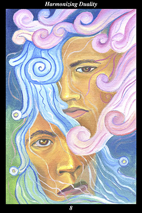

 | IMAGE:Two faces, one of a male warrior and the other of a female warrior, complement one another in perfect balance and harmony. The masculine face is that of the wind, whose color is hot and active. The feminine face is that of water, whose color is cool and reflective. The moving ends of the wind are drawn mimicking speech glyphs of fire in order to portray its power to instigate change. The waves of the water are drawn ending in jade beads in order to portray the precious nature of that which nourishes life and spirit. |
INTERPRETATION:
This hexagram represents the duality of forces within everyone and everything. The female warrior symbolizes the bringing forth of the diamond of creation, whereas the male warrior symbolizes its cutting and polishing. The union of the two faces means that you bring the two halves of the warrior’s spirit into ever greater balance and harmony. The confluence of wind and water means that you bring your intent into ever greater accord with the visible and invisible currents of creation. The conjunction of the hot dry wind and the cold damp water means that you bring a spiritual remedy to an ever greater range of those imbalances of forces which cause all ills. Taken together, these symbols mean that you harness the contradictory and complementary forces within yourself in order to achieve ever greater creativity, contentment, wisdom, and compassion.
ACTION:
The masculine and feminine halves of the spirit warrior unite in mutual reverence. In order to be true to ourselves, to genuinely know ourselves and fulfill our true potential, it is necessary to acknowledge that each of us contains our own contradiction. Failure to acknowledge our true nature slows our progress, sometimes to the point of wasting an entire lifetime. Because creation evolves by fusing related halves into a new whole, this is a time for consciously experiencing the never-changing nature of the true self. Because creation evolves by splitting each whole into new halves, this is a time for consciously experiencing the ever-changing nature of the true self. Those who do not experience firsthand the unity within duality come to favor one half of their nature over the other, too timid and insecure to achieve real independence. Those who do not experience firsthand the duality within unity grow self-satisfied and complacent, too vain and arrogant to believe there are limits they have yet to transcend. As your masculine half and feminine half achieve equilibrium, you respond to events according to their need rather than your own strengths, skills, or preconceptions: just as the lake harmonizes with the wind’s movement by making waves, all that you encounter will harmonize with your inner equilibrium by bringing their own internal forces into better balance.
INTENT:
Before harmonizing the core, it is necessary to harmonize the surface—before cultivating inner independence, it is necessary to decrease dependence on external stimuli. This is not the time to seek fulfillment from the outside. Rather, deepen your appreciation of the commonplace, taking care to bore the senses and disinterest the intellect. As you withdraw your focus from the world of dualities around you, shift your attention to the world of dualities within you. Identify by feel both the bright ascending clear energy and the dark descending turbid energy, following the way in which they shift between one another as they take turns expressing themselves through your feelings, thoughts, and actions. As you gain greater familiarity with their alternating movement, apply your intent to one or the other, adding to its momentum just as you would add increments of weight to one side or the other of a balance in order to make the two sides equal. Continuing to apply this method allows you to bring your inner duality to a stable and harmonious balance—a point from which you are able to shift from one half of the warrior’s spirit to the other with a minimum of effort. Through such self-discipline you harness the forces of the spirit warrior’s complementary halves, expressing yourself through their marriage rather than being expressed by their pendulum-like swings from one extreme to the other. The
benefit you engender in this way is like air and water to the unseen forces.
SUMMARY:
Do not take things personally—keep in mind that the pendulum of action-and-backlash swings according to universal laws. Work diligently to neither give offense nor take offense. Focus on how you are treating others rather than how they are treating you at this time. Subtly influence the actions of those you cannot change outright by allying yourself with their better nature.
THE LINE CHANGES
1° The purity of intent of a newborn—you are incapable of intentionally harming anyone or anything. The well-being of all forms of life is your passionate concern—you harbor no mean-spiritedness, cynicism, or pessimism anywhere within you. Do not ever let go your trustworthiness.
2° The purity of intent of a parent—you cannot but fulfill your responsibilities to those who depend on you. Nonetheless, you are loved for who you are and not for what you do—you are most fortunate to be accepted by those close to you. Keep the mutual concern circulating among you.
3° The purity of intent of a sibling—others may feel compelled to compete but you must not follow suit. Reassure them over time by simply holding your position and letting them advance or expand to their hearts’ content. They will come to trust you and be valuable allies in the future.
4° The purity of intent of a teacher—your every word and action is a lesson to those around you. How do you encourage others to strike the road of individuality and still listen to you? How do you show others that your devotion to them is part and parcel of your devotion to the higher?
5° The purity of intent of a guardian—you can ask those below to sacrifice for the good of the whole and they gladly comply. This brings everyone together in a unity of purpose. Make no ethical missteps and the strong support you enjoy from below will not evaporate.
6° The purity of intent of a grandparent—your most trustworthy advisers do not just tell you what you want to hear. Listen to those with real life experience and change your demeanor accordingly. Rid yourself of every shred of hypocrisy and your every word will ring true.